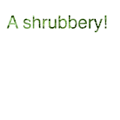

textpath
textpath(txt, x, y, width=None, height=1000000)
Works exactly like the text() command, except it returns a path that can be used with beginclip() and endclip() instead of drawing text to the screen.
 |
path = textpath("A shrubbery!", 10, 40)
beginclip(path)
image("shrubbery.jpg", 0, 0)
endclip() |
a path containing the given text as outlines